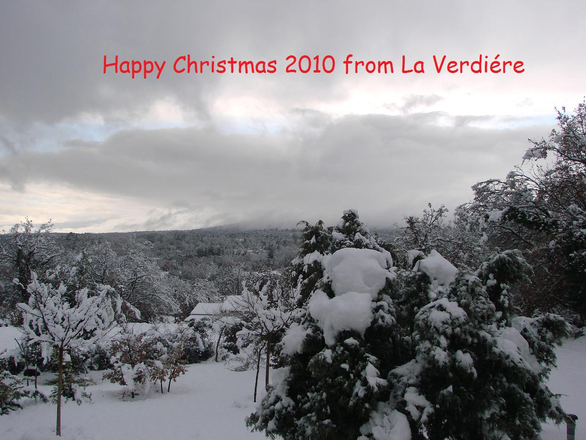

Well, here we are at nearly the end of 2010, where this year has gone is beyond me.
I hope this letter finds you and yours in the best of health? Jerry, Thomas and I are a thriving, as is our family apart from that is Jerry's Mum, who is very poorly in hospital.
Our last 'year in Provence' has been different, challenging and a real experience. The weather and its extremities have kept us on our toes and teaching us many lessons in the garden.
We started 2010 deciding to top our 30 odd Oak trees to improve views and evening sunshine, an easy task we thought. The weather caught us out on many occasions. Two large trees have been left untouched because of their position, one on the east side in the lane to our house, the other is on the north side and higher up on a terrace, both of which overhang on land that is not ours, so will need to have permission from the Mairie in the village to cut.
Spring arrived allowing all the bulbs I had planted on the terraces to bloom in profusion, they certainly were a cheery sight.
The better weather also gave us the opportunity to have the front terrace (on north side) re-concreted and eventually tiled, another challenge awaited us as the wrong tiles arrived, so a wait of several weeks before we received the right ones and eventually the project was completed.
For 2011 the major project will be to finish the south terrace and maybe get the 'pool' installed. Neither project will be started until February/March as none of the builders work outside until the weather improves here.
Jerry has been kept busy, building a covered area for our new car. He also added guttering to the front of the house, which he connected to a large water container which we can conserve as much water as possible from the rainfall here. This we can use in the summer for the fruit and vegetables we grow. He has also been busy creating raised beds in the vegetable garden, which is still under construction, we have to get some more wood to finish.
The garden has provided us with vegetable and fruit, and this year the very first olives on our young trees.
We discovered in the garden a 'Berger'-shepherds hut in our garden, it had fallen down with only two walls standing, we decided to rebuilt it using all the stones we found around it. It now has three walls and a roof on it, we intend to raise the roof more though as to allow water to fall better at the back, it is the perfect storage area for all the logs we have after the tree cutting.
Inside the house remains very much the same, we have now painted all the walls in the one colour of white, so much easier making it bright and light.
We have had many visitors, family and friends to stay, we look forward to all the trips to us. We have also made many trips back home to England because of family commitments like weddings etc. We try to see as many people as possible on our return back but just don't seem to have enough time to see everyone.
I am still looking for work, not so easy here, however I do have a 'little job' with a French family teaching/helping them with their English. They are lovely and in return they help me with my French.
I have joined a 'singing group' in the village of La Verdiere, I can't sing in tune,but they haven't notice yet!!!!!. It helps me with the pronunciation so that is why I joined, they are a friendly bunch and have made me very welcome.
Still going to college and conversation classes to improve my language, it is good for me have have a focus especially as I do not work. It is a very social group and a way of meeting people too.
Jerry's job is going really well, he works later now and sometimes in the evenings and weekends. He seems happy though which is important when working and living overseas. Lots going on with Iter and it is moving ahead with contracts and construction. People too are moving on, some retiring and some as their contracts have finished so they are returning to their own countries. It is a sad thing as you get to know these people and before you know it they are leaving.
Thomas (my cat) is thriving, he is building up his winter coat. He is still climbing trees and investigating new things, including animals, some of which scare him more. Recently he came flying in through the front door, something had definitely spooked him. It was not until the following morning that we discovered what it was. Jerry and I discovered footprints all around the garden. They belonged to a family of 'wild boar', they had been rummaging in the garden looking for food and in the process had dug up parts of the garden, I just wish they had stayed longer and dug up the whole garden saving us the job.
Erin our eldest and her boyfriend Tim, moved into their new home in February,they now live in East Hagbourne. They are both happy in their new home and slowly getting it together. I have sorted out their garden with weeding and cutting back plants and doing the shredding and using it to mulch the borders for them. Jerry helped Tim to replace a concrete post and wood panel in the fencing. Tim then painted all the panels to match it, it looks really good now.
Helen and her boyfriend are still living in their apartment in Abingdon,it is a lovely big place however they are thinking about moving to a house so they can have a garden, it won't be until next year though.
Both couples are as ever busy at work, but thankfully also in good health.
Jerry and I return to England, weather permitting on Christmas Eve for the festive season. We are looking forward to spending time with our girls and family, and if there is time to see friends too.
Well I hope this letter has given you a little taster of our life here in Provence over the last year.
I hope you have a Very Happy Christmas and a Peaceful New Year. May the coming year bring you the very best of everything.
God Bless
Anne
& Jeremy